Hi I'm max,
a Master in Design for Emergent Futures student at the Institute for advanced Architecture of Catalonia. On this website, i will document my journey throughout the MDEF program.
As an overview of what i'm interested in, you can take a look at my design space.
In the first week, the main objective was to get to know the faculty, our co-students, and the area around IAAC.
To become familiar with the faculty, Guillem talked a lot about MDEF, the FabLab here as well as FabLabs all over the world, and projects of all sorts. Also, we got an overview of all the workshop areas the IAAC has to offer: 3D printing, CNC milling, laser cutting, woodworking, electronics, and robot arms, to name a few.
We were also welcomed with a spontaneous visit by Nadya Peek, who gave a presentation about “Making machines that make,” with a strong emphasis on concepts like open-source frameworks and democratizing access to digital fabrication, to immediately inspire us with awe and creativity.
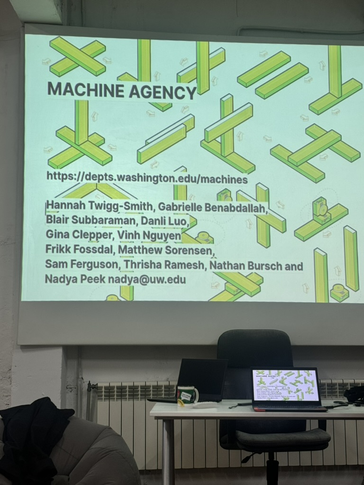
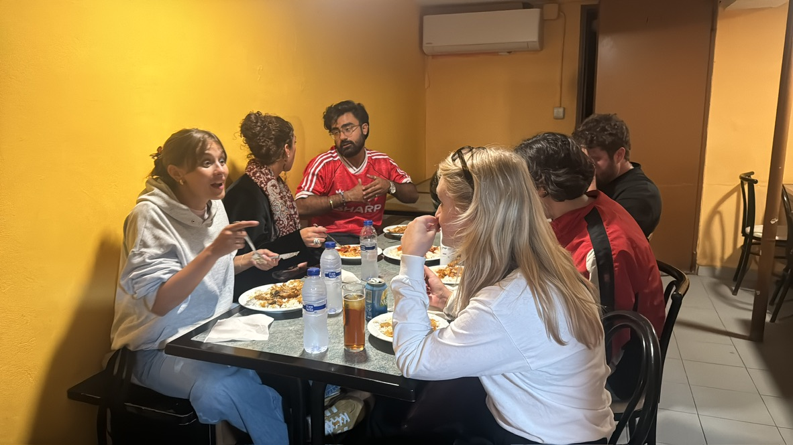
In order to achieve the second goal, we had to bring some pictures of objects, a community, a background and a “more-than-human” aspect that influenced our live in some way and tell a few stories along those pictures.
Also we went out for some drinks.
Then, for the last objective, we took a leisurely stroll around Poblenou, visiting community workshops, community gardens, and community spaces for art & culture.
I don’t think I have ever seen so much community engagement in a single place.
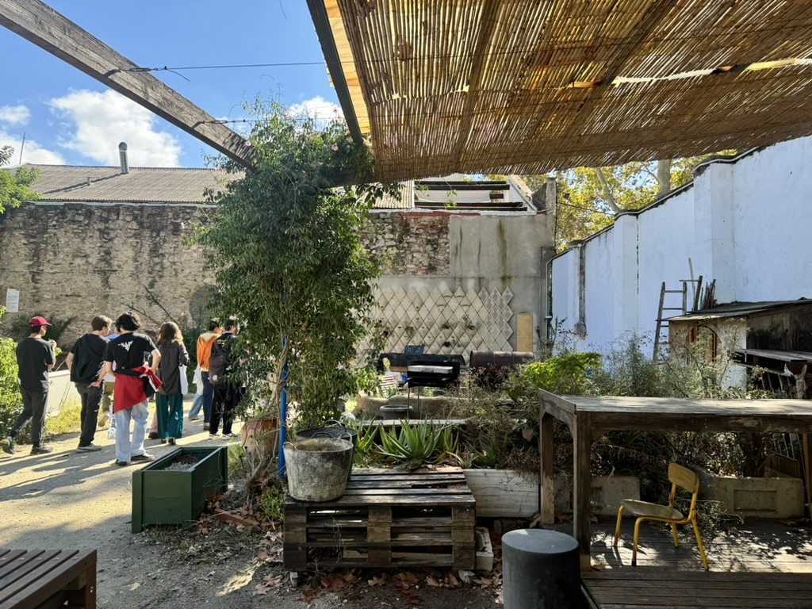
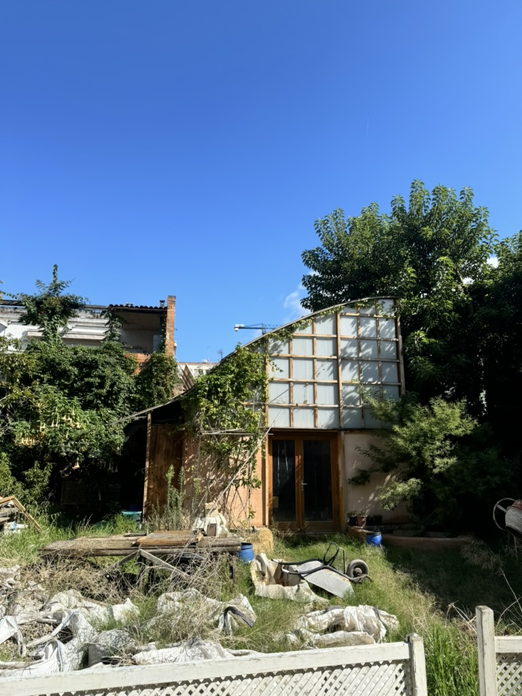
A design space is a continuously updated mind-map to keep track of, organize and connect different topics that interest us within our design practice. The first draft of our own design spaces we made from pictures of several different objects, materials, reference projects, contexts and methodologies that interested us. By ourselves and in groups we found connections between the different topics.
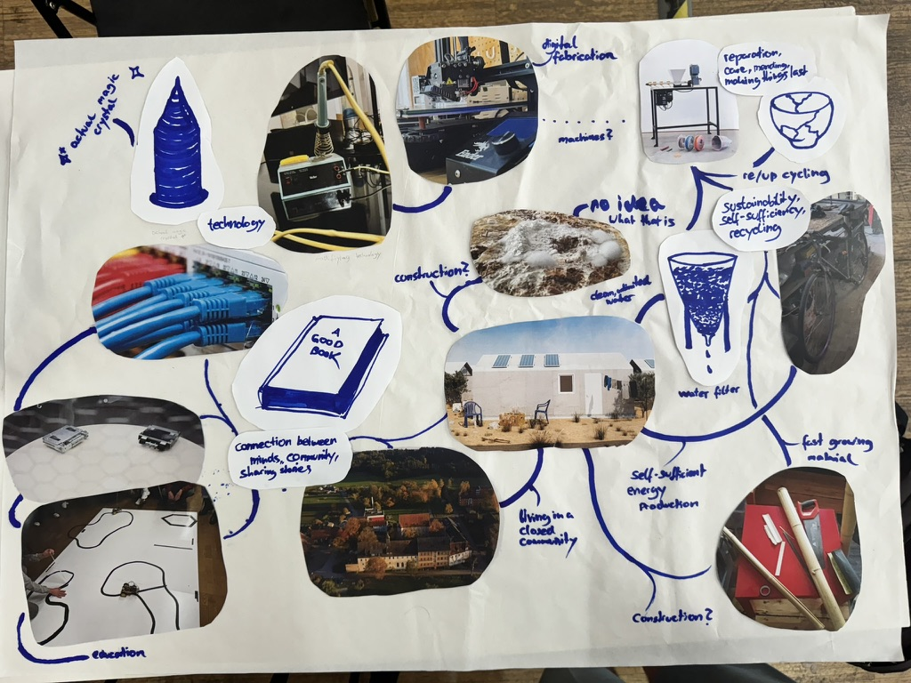
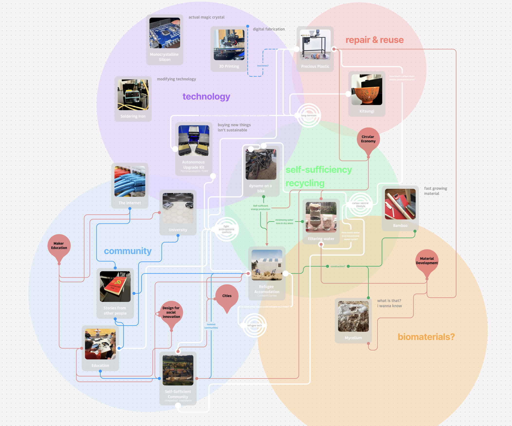
Later, we extended, digitalized and added more items to our design spaces. A current version of my design space is live at the top of the page.
For me, the design space was probably the most helpful exercise that we have done up to this point. In the beginning it took me a while to understand what it was supposed to look like, so i struggled finding pictures at first, but i am very happy with the result.
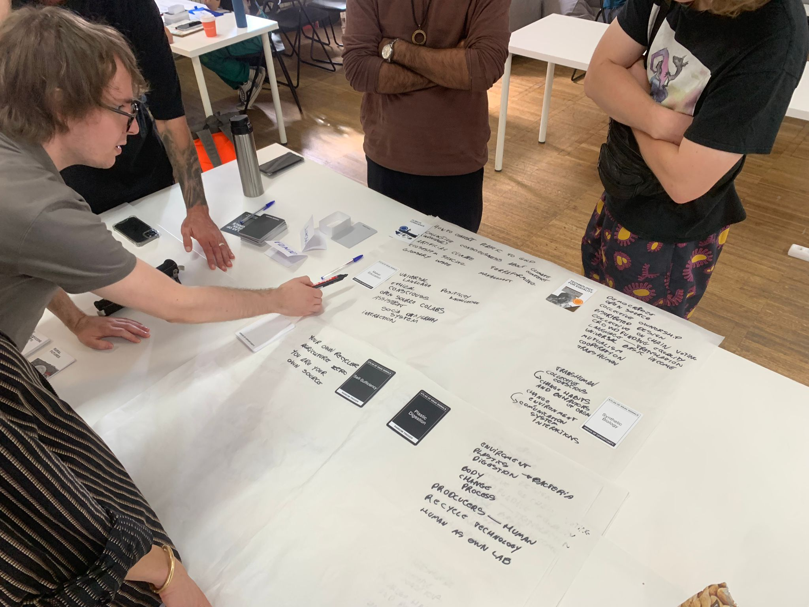
The Atlas of Weak Signals is a toolkit designed by Mariana Quintero, transforming the research of weak signals into a practical space to navigate and understand possible emerging scenarios based on underlying trends in our current world.
After familiarizing ourselves with the cards, playing a (pretty chaotic) round and adding some of the cards to our design spaces to integrate possible upcoming trends and areas of opportunity, we were tasked with contributing a weak signal by oursleves:
Thanks to the advancement of understanding in neuroscience, we know that thoughts and ideas change the biochemistry of our brains. Given this, future generations might learn to alter their habits and behaviour by performing mental exercises, or capabilities like conscious control over nervous system and body temperature will develop and become widespread.
Another way of understanding this could be a direct interface between the mind and the internet or any other sort of computer.
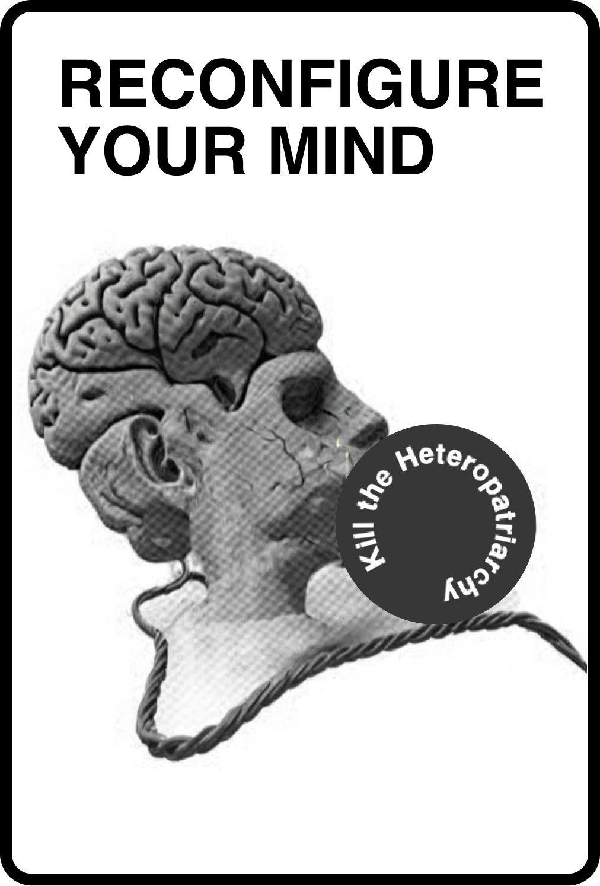
Reflection 1
The first weeks at MDEF have already been a diverse, challenging, and perspective-broadening experience in many regards.
First of all, I am thoroughly happy with the people at the whole IAAC faculty. When I decided to come here, I imagined IAAC to be a place where people with open minds, a vision for a better future, and great technical skill come together, and I have not been disappointed. Additionally, my classmates at MDEF are much more than I could have hoped for, and I am excited to see what projects we are going to do together.
The first two weeks of classes at MDEF offered very new ways of thinking about design for me. The design space method helped me visualize, organize, and interconnect different fields of interest within my practice, and I have started to enjoy it as a complementary tool that will be changed and expanded alongside to reflect my own changes and developments throughout my education.
The number of communities and projects connected to IAAC was overwhelming at first, but I am excited to see what opportunities will arise from that during the program.
During these first weeks, we have had many introductory classes on hardware, electronics, and coding. Since this is probably the sub-field of design where I have the most experience, these classes are not too challenging for me, but I still feel like I can learn a lot. I have done some hardware hacking in the past, but never to the extent where I had a whole disused high-tech SLA printer to disassemble and then invent an entirely different functionality for the technical components. This is an awesome opportunity, and I am grateful to be able to participate in classes like these.

In class, we had to craft a quick prototype. We were supposed to take a past project from one of our classmates and then try to make a prototype around that topic.
Bélen had a project where she experimented with a fabric that could generate electricity when it was warm on one side and cold on the other.
In turn, I wanted to experiment with a way to wear this fabric in an unrestrictive fashion so that it could be worn over clothing and on different parts of the body.
I did my first 1PP intervention to figure out how much water I used in a day. It was a fun and interesting experience, and a good reason to finally buy a Tripod.
I learned that I used almost 77 liters on that friday which is a lot, but I think it must still be a lower than average day, since I didn't clean a lot of dishes nor did I do laundry.
Reflection 2
The last two weeks of MDEF felt very intense and a lot more draining than the first two. Maybe that’s just because I was a little sick, and it was hard for me to keep up.
Nevertheless, the design intervention was an interesting thing to do, and I want to see which other questions can be answered in this fashion. I am not entirely sure how scientifically useful I consider the information gathered in this way, but I can’t deny that I like the honesty of answering questions by taking action.
I very much liked the other content we were working with during these last two weeks. The Living with Your Own Ideas workshop was not what I expected, but I think it opened a new field of interest for me that I had not been aware of yet. I consider myself to be an open-minded person, but some of the ideas we were presented with are more profound, speculative, and progressive than anything I have encountered up until this point.
The Companion Species Manifesto, for example, presents a way of thinking about interspecies relations
that is entirely new to me, but it resonates deeply, and I am eager to read some of the book recommendations I received this week.
At first, it was hard for me to engage in the prosthesis we prototyped during the week. In the past, I needed a clear idea of what I wanted to achieve by building a prototype. The different prostheses we built during Living with Your Own Ideas had the goal of building something to experiment with the notion of self, encouraging a shift in one’s own perspective. I quite enjoyed this after I got over my initial difficulties.
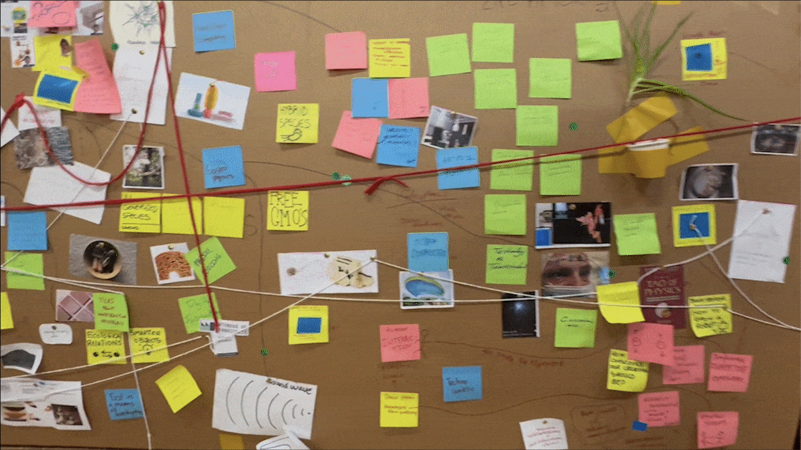
Collective design space
To start our getting together in groups for a bigger intervention, we composed a huge design space on the wall of our classroom, trying to connect several of the core interests and topics each of us have contributed. This was interesting and fun, but also pretty overwhelming.
Starting out from something as broad and abstract like our collective design space - that included all the major and a multitude of minor topics of interest to the MDEF course - was very helpful to make connections between the topics of interests of different students, but it also made it pretty difficult to boil something down into small actionable steps.
In smaller groups formed by the connections of interests on the big collective design space, we assembled another, smaller collective design space. This felt pretty chaotic and some of the reasons could be that we are inexperienced with making design spaces, especially collective ones, and in the future it might help to stick more to the basic variety of nodes that belong on a design space: Objects, Materials, Projects, Methodologies / Technologies, Contexts and Experiments that represent or otherwise relate to an Issue that we are interested in, more than just plugging thoughts on post its.
In any case, it remained difficult to get within an actionable scope to do something that can actually be done in so little time, while still teaching us something meaningful, and by the time we arrived at that conclusion, we had even less time left.

So my second total and first group intervention ended up being about long-termism. Lucretias phone is 5 years old and the battery as well as the charging are not the best anymore. However, this phone has an inductive charging interface, so we thought we could use a solar panel to maintain some more battery during the day, as well as use the inductive charger to make the charging process itself less tedious.
From that, we started to think more about our daily usage of our phone batteries. How could we change our habits in regard to our energy consumption on the phone? In earlier times when phones weren’t as good, it was a very normal practice to turn off wifi, bluetooth and mobile data respectively when they weren’t being used. Would there be a noticeable difference if we used less services on our phones that consume a lot of energy? What are the most energy consuming applications on a phone anyway? Luckily this can quickly be answered by looking at statistics recorded on iOS: What seems to consistently consume the most energy for me were instagram, audible and WhatsApp.
To inquire if we could make a noticeable difference by a change of habit, I started using my phone in battery save mode and on minimum brightness, turned my network services on only when i needed them, and also reduced my time on instagram.
The difference was a lot bigger than i expected it to be. With this routine, I could easily use my phone without charging for two days instead of only one, which effectively doubles the lifespan of my phones battery, because I only use half the charging cycles.
I am surprised at the result eventhough I feel it seems pretty obvious, sometimes action and consequence seem removed from eachother even if they are clearly not. I will continue to use these small adjustments, since it feels like no big deal at all to change them and the result seems disproportionately beneficial.
Reflection 3
I think these weeks I started to feel the MDEF characteristic “lostness” that some of the people around me talked about. The intervention we did during the last two weeks was interesting enough, but it also took us some time to finally decide on the topic. It appeared to be quite difficult at first to find a course of action that we all felt comfortable with and that was sufficiently interesting to all of us. It ended up being very specific: about what actions we could take to make our phone batteries last longer.
While this is a topic that seems to be very well aligned with questions from my design space, and I feel like we explored a good range of different approaches—from just changing our own habits to using the phones for more energy-intensive tasks less, to building a little portable solar-powered phone charger—it felt like something was missing.
When I did my intervention on water consumption, I felt very comfortable tackling a small and specific topic.
In the second intervention now, we worked as a bigger group while our focus felt even more specific, which left me questioning how what I am doing fits in with the general direction of my practice. This problem, of course, is probably very closely related to me, in fact, having no idea where to go with my project at this moment.
At this time of the course, I still feel very much like I am being stuffed with a multitude of problems, facts, technologies, and philosophies. A lot of these are very fascinating to me, and I can see myself incorporating them into my practice, but I cannot keep up with processing them all, drawing connections as well as I would like to, and assembling a sort of framework to make my interests work towards a common goal.
The third intervention was, and actually still is, a lot of fun and very interesting to me. I finally got around to making a project with mycelium, which I had wanted to do since the start of MDEF.
Just as in the last group intervention, we struggled to find a group, a topic, or a course of actionable steps, and by the time we were all satisfied with our plan, the first week had already passed. In the second week, we started growing mycelium on different substrates: coffee grounds, cardboard, textile, and sawdust, which are all organic waste materials we produce in our daily lives. The basic idea was to make the mycelium grow throughout the substrate, gluing it together and enabling us to recycle discarded material scraps into a new solid shape.
To gather some data on the growth of the mycelium and to give us additional information to compare the different substrates, we wanted to hook the growing chambers up with some sensors. Since the outside temperature is going to be about the same for all the different substrates, we wanted to see if there would be
differences in the temperature caused by the mycelium growing in the different substrates. We also wanted to monitor the humidity of the growing chambers as well as the electrical resistance of the substrate to see how it changes as the mycelium grows.
Unfortunately, our mycelia were all contaminated by mold, so we got new, clean spawn grain and will try the same process again next week.
Reflection 4
So, my last two weeks were full of very new experiences. Not only did Laura further our education in IAAC philosophy and introduce us to some art collectives around Barcelona who are doing some very cool things, but Jana also had a very helpful insight for me as well: from now on, I will be treating my interventions as explorations of different ideas that can contribute to or benefit the exploration of my umbrella topic, communal living. This feels natural to me since I have thought about living in some communal way in the future and because of the unconsciously central placement of this idea in my design space. This allows me to frame my many different fields of interest within this larger topic and focus them through an overarching context, emerging from their connections.
This feels natural to me since I have thought about living in some communal way in the future and because of the unconsciously central placement of this idea in my design space. This allows me to frame many different interests within this larger topic and enables me to ask many questions that I find very interesting: How could different kinds of sustainable materials be cultivated inside a commune, and how could they be used to build different things? How much energy, water, and trash would such a community need to manage, and what would be the best ways to do so? Which philosophies and ways of co-living should or could be applied in such a commune, and how would they look in day-to-day life?
This framework allows me to work with my classmates who are interested in similar topics but for different reasons or in different contexts. For the intervention over the last two weeks, I worked with biomaterials for the first time, together with Andrea, Bel, Kevin, and Vitti. We used four different substrates that we generate as waste: wood scraps or sawdust, coffee grounds, cardboard, and fabric to grow mycelium.
The idea was to figure out how well the mycelium would grow on different substrates and whether it would bind them together well enough to form a new shape that could be useful in a different way, effectively recycling waste material. We also wanted to hook up the growing mycelium with temperature, humidity, and galvanic sensors to gather information about their growth, enabling us to better compare the growth across different substrates.
Even though we didn’t quite finish the intervention (mycelium takes a long time to grow, our samples got contaminated, and figuring out a way to measure the conductivity of mycelium took some time), I am very happy with the direction of this exploration. This is especially true because I finally experimented with something completely new to me, which has been a goal since the start.
For the design dialogues, we will now focus on getting uncontaminated batches of mycelium to grow, hooking them up with sensors, and getting them ready for the design dialogue.


The Machine Paradox workshop consisted of two intense weeks with our noses deep in electronics. In the first week, we disassembled, cataloged, and examined the internal workings of a discarded electronic device. In the second week, we reassembled the parts into a “Paradox machine” to give them a new life.
We started out by cleaning the dust off some items from a container full of discarded electronic machines.
Afterwards, we got together in groups, each group receiving one the scrapped devices. I worked together with Bélen, Flavio, Andrea and Ramon, and we decided to give our attentions to the beautiful Formlabs Form 1 SLA Printer.
To see a detailed documentation of our teardown and quest to examine and control the individual parts that make up the printer, you can take a look at the forensic report we wrote on the topic.
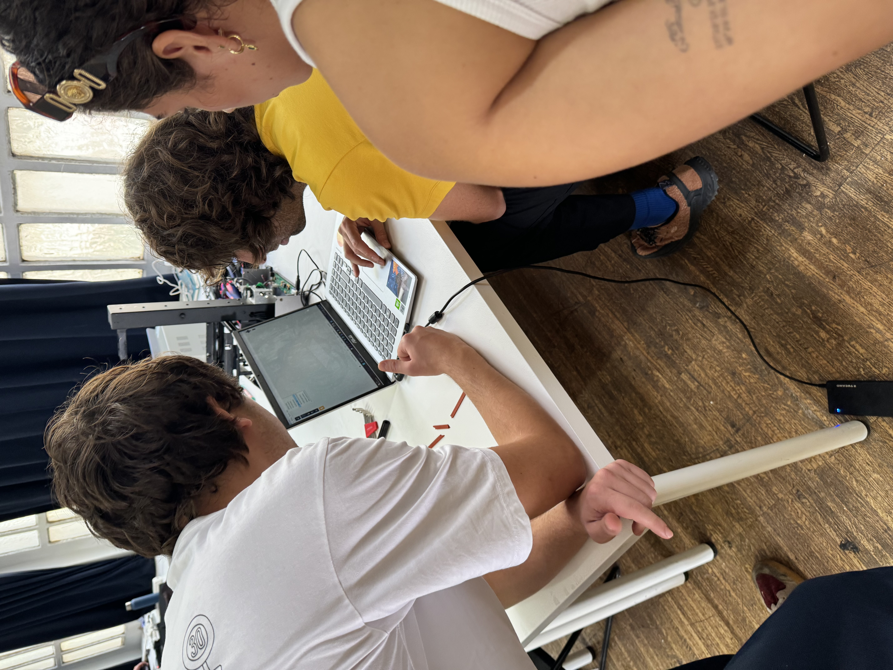
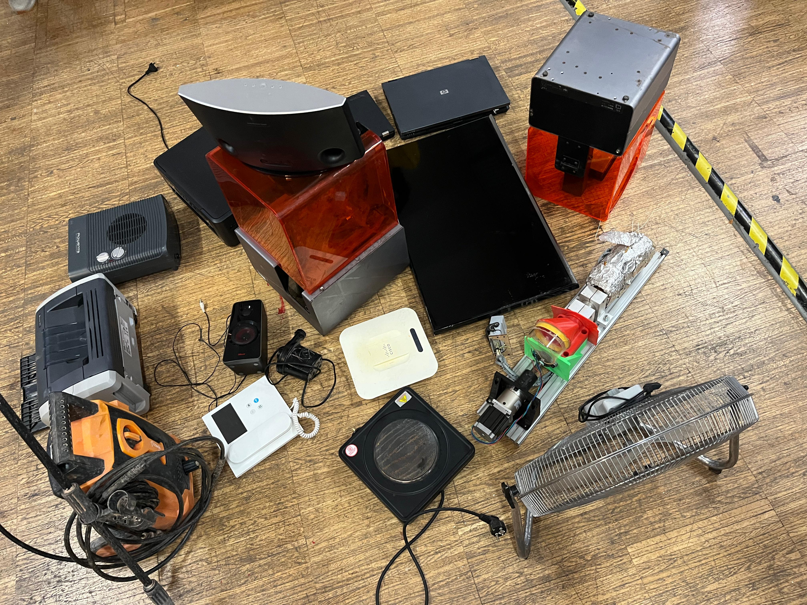
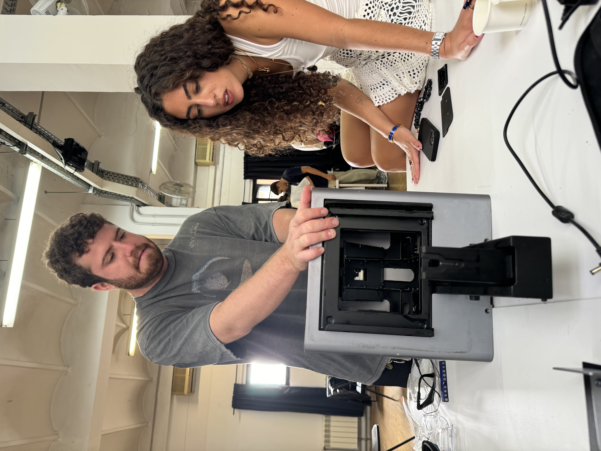
The second week we spent on assembling a useless machine. The goal was to use parts of the basic structure of the Formlabs, including the mechanism that detects when the cover is open for safety reasons, to make a machine that “parties” with itself while it is closed, but when it detects it was being opened, it would shut down, not allowing meagre humans to take part in its fun activities.
We couldn’t use the Barduino board, because the sensitive Galvo motors would react to the frequency of the PWM pulses and flicker about. Instead, we ended up with an Adafruit Feather ESP32-S3, which sports two Digital to Analog Converters (DAC).
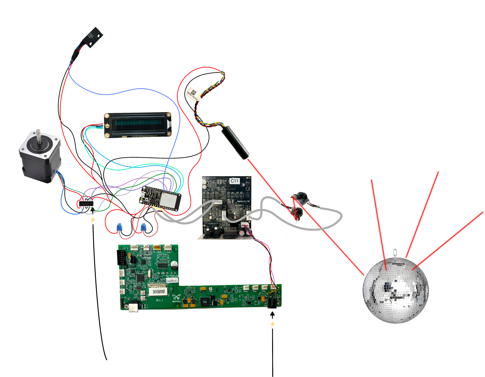
The connector cables we accessed on the Galvo driver board have a Ground, Power and Signal Wire. With the DAC connected to the Signal wire of the Galvo board, we could control the position of the lasers on one quarter of the available space on the printer. Connecting the power of each of the Galvo controls shifts the lasers origin by 50% on the axis of the pertaining Galvo motor. In this fashion, all four quarters of the printing space can be reached with the laser by using the 4 combinations of powering or not powering the controls for each Galvo motor.
To center the laser as good as possible on the disco ball to achieve more reflections, we connected the power power wires through potentiometers. They regulate the voltage going to the Galvo driver board, allowing us to manually adjust the origin of the laser to an area directly under the disco ball.
In order to produce a continuous pattern that shoots the laser at different points at the discoball, we utilized a lissajous curve motion. For this we used code by pyeseul from p5.js.
The Reed Sensor inside the printer that detected wether the cover is closed or not seemed to work at first, but it gave out eventually, so we ended up replacing it with a Hall Sensor.
Controlling the Stepper with an H-Bridge to move the disco ball up and down to shake it a bit was fairly straight forward.
We couldn’t figure out how to communicate with the OLED screen that was built into the Form 1, so we substituted it for a simple LCD screen that was sufficient to display our two different messages depending on the state of the Printer: “party in progress…” for when the printer is closed, and “no humans allowed” for when it is open.
Here you can take a look at our final presentation of the project.
This workshop was a pretty intense experience. Taking apart a high-tec machine like the Formlabs has to be exciting of course, but using most of its parts to build another completely different machine was something I have never done before and enjoyed a lot.
The experience wasn’t only great because of the workshop concept, but also because of my classmates and teachers. Inside of my team, I felt that we were all eager to experiment and understand, motivated and most of the time we managed to share the work somewhat efficiently.
To watch the other groups develop their projects was very enjoyable as well and i am a big fan of the other useless machines.
The amount of teachers and their helpfulness, good moods and knowledge contributed greatly to the success of the workshop. With every question, doubt or idea I had, I feel like I always got very attentive support and I think I learned a lot.
Living with your own ideas was, at first, a little strange experience for me. I caught a cold the weekend before, so I missed the introduction and only attended half of the classes. In the part that I did participate in, Thomas Thwaites elaborated on some of his projects for us: building a terrible yet hilarious toaster from absolute scratch and living as a goat in the Swiss Alps for several days. Insane, ridiculous, and absolutely brilliant. Then we went on to read the Companion Species Manifesto by Donna Haraway. These concepts, or at least profoundly thinking about them, were entirely new to me.
With the prosthesis, especially the second one, I struggled a bit at first. Coming up with an idea that I like quickly is hard enough, but in the beginning, I also had my problems with seeing the purpose of these tasks. Only later, after having had some time to think, I started to like the topics that have been introduced in this workshop a lot. They presented to me a way of thinking that feels free and progressive, encouraging close examination and considering different perspectives, experimenting with identity and self-expression.
Prosthesis 1 - Becoming the best version of ourselves
I would not say I am a very lazy person, but I think few things are as hard for me as leaving the bed in the morning. However much I enjoy my life or not, the cozy warm bed always feels like the better option. Often I think about how much happier, more productive and downright better a person I were, if I could start every day with energy and ease. Hence, my prothesis shall provide that!
It’s a little chip that is injected under the skin. Every morning, like an alarm clock, it will pump an amount of adrenaline into my blood that would wake a gorilla.

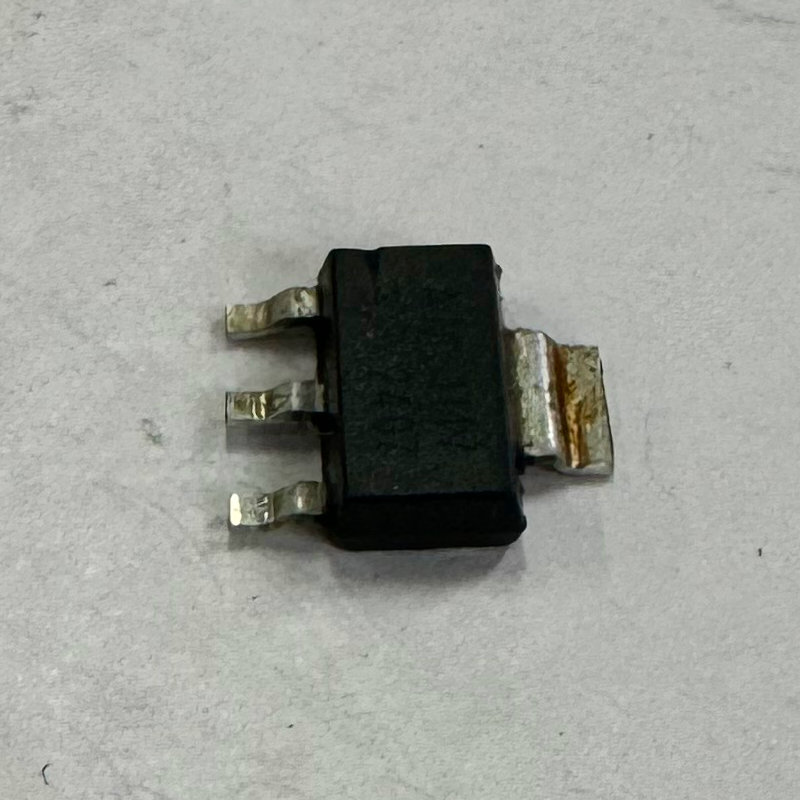
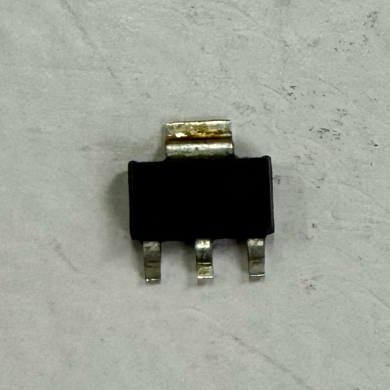
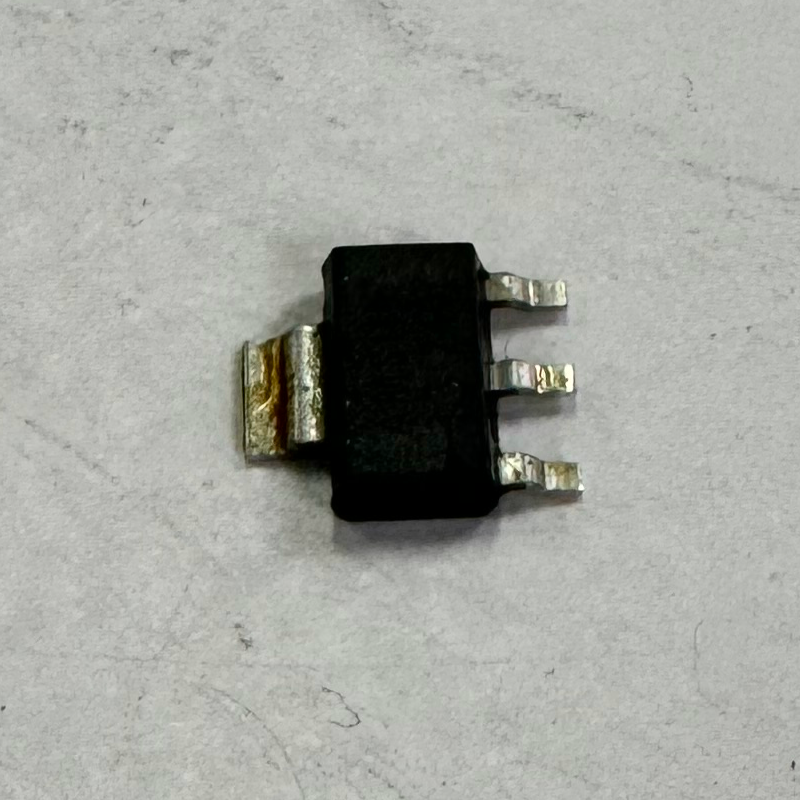

Prosthesis 2 - Becoming something non-human
This was difficult at first, I think I have never wanted to be something non-human before.
My approach here was to get inspired by the considerable amount of e-waste that occupies most of our classroom. I just started crafting something from scraps I liked and thought about a story as I went.
I ended up with a device that would connect my brain to the consciousness of nature itself. I don’t know what that would mean, but it’s an experience I wouldn’t miss out on.
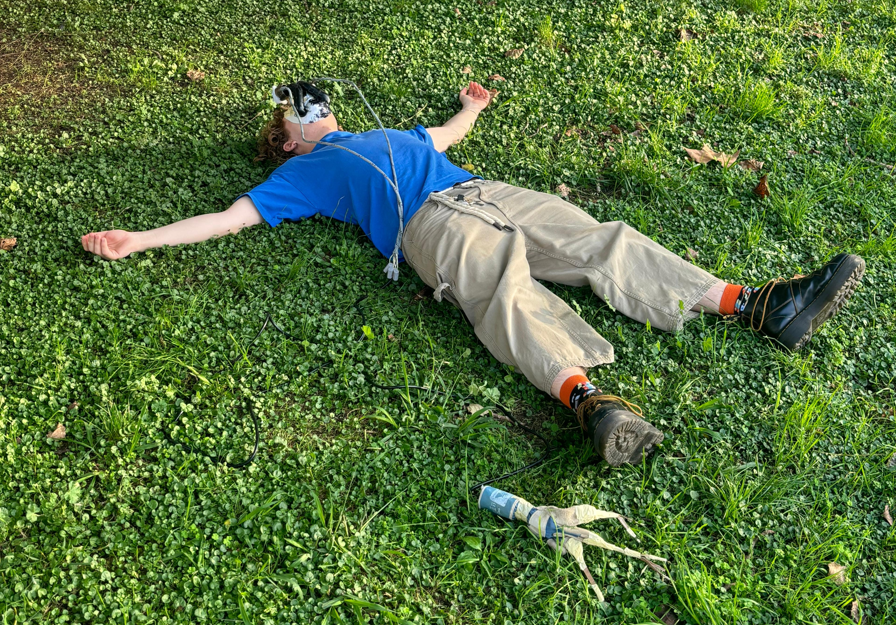
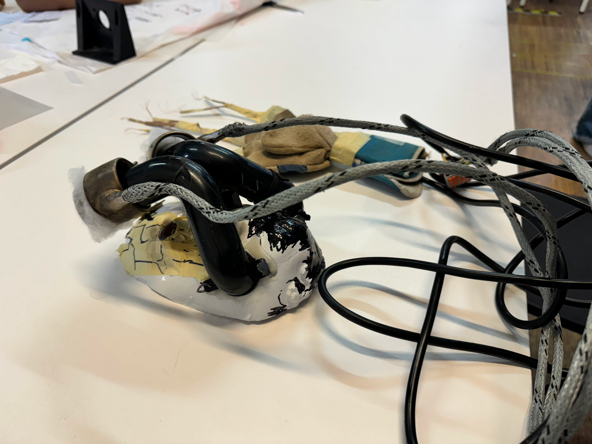
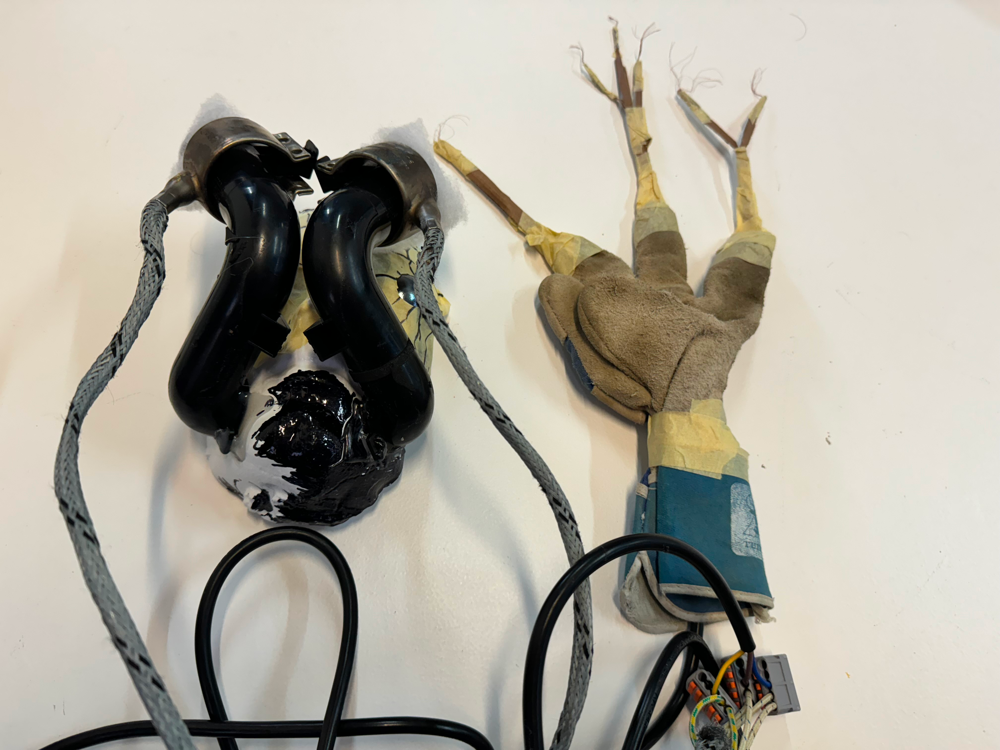
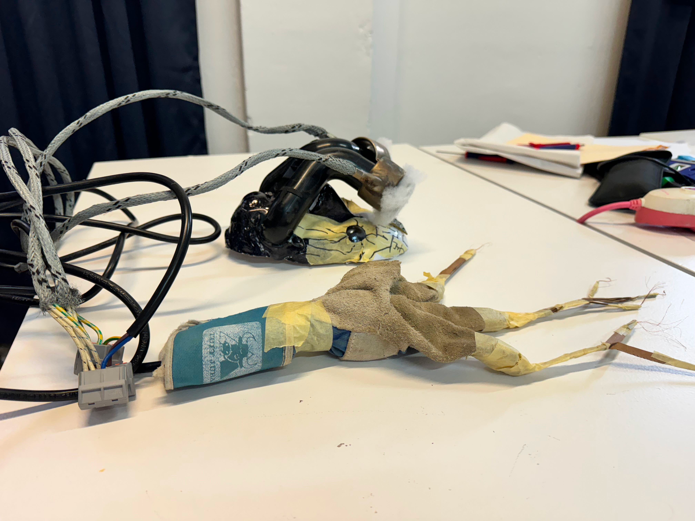
Part 3 - To judge & to be judged
This task consisted of two parts:
The subject role and the detective role. In the subject part, we would change our behavior or the way we looked with the help of a prosthesis.
As detectives, we would follow our subjects around, documenting their various actions and trying to figure out what they meant.
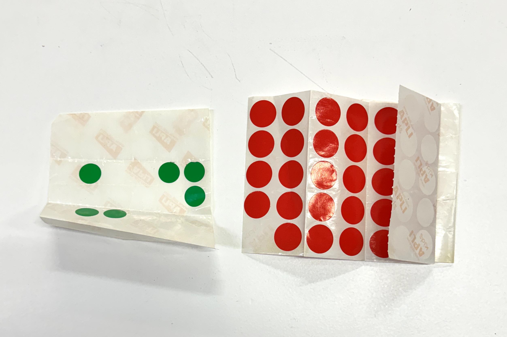
Subject
My goal was to leave my opinion on things that I see in my environment. With a simple dot vote consisting of green and red sticky dots, I could leave my approval on a pretty bike, a water fountain or my detective and likewise express dissatisfaction about giant burger king advertisement murals or trash on the street. Judgement comes in a lot of layers, and to be judged for judging something else is not an uncommon occurance.


Detective
I have never been someone who consciously thinks about how other people are feeling; from time to time I know intuitively. Focusing all my attention on figuring out what was going on in someone else’s head was an intense experience. However, my inexperience shows: the closest I came to understanding the reasons behind her behavior was the question, “Does her interaction with the thread reflect her moods?” which I wrote down during the observation.
I imagine that, for a more experienced observer, the conclusion would have been crystal clear. She rolled out the string in a controlled and orderly fashion while talking on the phone during a quiet moment on the roof, with only one other person. Later, in a larger conversation about MDEF topics, she tangled the thread into a messy jumble. She intended the string to represent the way her thoughts varied in different situations, visualizing her mind’s activity during different interactions.
It was hard for me to really empathize with Paula’s actions, as I often felt distracted by things she was doing that were outside my own experience. I didn’t know what she was working on, so I felt like I was missing an important component. I didn’t know whom she was talking to on the phone, or what the conversation was about, so I couldn’t make much sense of it. During her later conversation with our classmates, I felt disconnected in my role as a detective and didn’t want to participate in the conversation.
In conclusion, I realize I still have much to learn about what to focus on when trying to understand someone’s thoughts through observation. Still, I found the experience very insightful, and I think I’d like to incorporate this practice more into my own approach.
In the extended intelligences workshop, we explored the origins, social and ecological implications, as well as practical applications of artificial intelligence and data.
Let me start with personal definitions of the two terms AI and data:
Artificial Intelligence is composed itself of two terms: Artificial is something that is manufactured through labour of a living organism, in most cases humans. Intelligence I will define as the ability to self-sufficiently advance and apply a knowledgebase.
Data is a word that is difficult to understand in the scope that it has reached in our time. It describes the –in most cases digitally– recorded traces our presence leaves in the world. A digital twin of each and any of us and our environments. These digital twins are far from accurate, but nevertheless growing ever more precise.
Data is valuable because it is the backbone of any modern AI system. The unfathomable amount of recorded data in the world would be useless for humans, since it is simply too much for any human to analyze. Computers are much faster at sorting through information, so training an AI system with these huge amounts of data highly facilitates the process and shortens the time required to analyze these. The more data is used to train an AI system, the more accurate and therefore more useful it will become.
The invention of artificial intelligence has greatly influenced the world already, and it is hard to imagine what it might hold in store in the future. Around 70 years ago, when
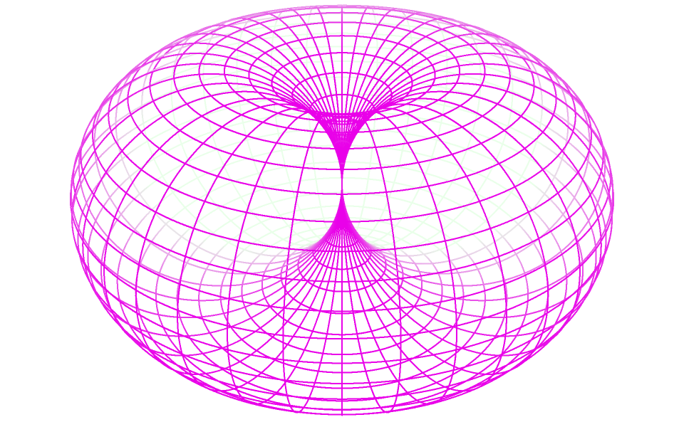
the term AI was coined, there wasn’t nearly enough computing power available to handle the large amounts of data required for the useful AI models we enjoy today. But scientists kept looking at papers, as they always do, and in the 1990s, as Moore’s law had finally produced enough computing power to enable breakthroughs like Deep Blue and AlphaGo, AI was starting to become a topic that would be of interest to more than just a handful of computer scientists.
As AI was made accessible to a wider public with the release of ChatGPT in 2022, AI is now a topic that everyone is somewhat familiar with, but less so with the tricky challenges that it brought along:
Behemoth corporations have the ability to gather incredibly vast amounts of data and the computing power to train incredibly good AI models. These cannot only be used as consumer applications, but also to analyze user data in order to provide the user with personalized advertisements and personalized media, in some cases without the user having any sort of control over their exposure to this type of AI-curated content.
This is only one of the three implications with a rather dark side about AI as we learned during the course: the vast computing power required to train and run gigantic AI applications like ChatGPT, Copilot and Midjourney is concentrated in extensive data centers owned by large
corporations, contributing on a large scale to issues related to extraction of rare earths and minerals as well as the production of e-waste. In addition, these data centers use up roughly 2% of global electricity and in 2026 it could equal the total electricity consumption of Japan. Next to its terrible score in terms of an ecological footprint, there is also the problem of AI Bias.
AI Bias introduces itself in a very uncomfortable way: It is a sort of reflection carried over from either the data itself, or the biased composition of a dataset that is used to train powerful AI models. Since the vast capabilities of AI unfortunately exclude a moral compass, it occurs that racist, sexist or otherwise morally questionable results are produced. This can affect people's lives in a very real way, for example when a company employs AI as a hiring algorithm or to calculate the risk of giving out a loan.
This sums up the rather unpleasant bits about AI. After that, it was time to think about practical applications. After all, AI is not magic; it is software that can be written—ironically enough, with the help of AI tools—even by inexperienced hagglers like ourselves. In Google Colab, which has the Gemini AI assistant so neatly integrated, it is difficult not to use it, we were slowly made ourselves acquainted with the subtleties of constructing an AI model. We were also tasked with familiarizing ourselves with some datasets available on different websites on the internet. It will never stop to amaze me how many things people create and make available on the internet for everyone to use.
In groups, we were supposed to develop an AI application that would address future issues related to MDEF in the year 2044, within the context of a speculative solar-punk scenario.
We started with the idea of detecting the general stress, exhaustion, and hunger levels of the class to automatically schedule dynamic breaks. It turned out pretty hard to find the right sort of datasets for that.
In the end, we attempted to tackle the problem that our course recommends to us an insurmountable stack of books, on average adding about six to ten each week. The basic idea was pretty simple: We would have an AI create a vector store out of the data comprising the books and papers we are being recommended, allowing an AI to easily retrieve data to answer any questions about topics relating to our course by fetching answers from our additional resources.
Making this work was honestly not an easy task, especially in the time we had to do it. What further complicated matters was that it took Colab almost 10 minutes of uninterrupted computing to load our test sample of a few papers into a vector space, and we didn’t manage to figure out a way to store this vector space externally. So, we had to generate it over and over again.
Other than that, it was very interesting to work with this sort of tool. AIs are versatile and powerful, and if you know what you are doing, you can put them to great use—provided you can find the data the AI needs to understand your task. In our case, we were able to just use a folder full of papers in PDF format as a dataset. I was pretty surprised at how easy it was to manage that, essentially creating our own dataset.
Our project is called the MDEF Pirate Library, since our sources are, of course, being used completely against any copyright claims of the authors, contributing in our way to an open-source solarpunky scenario.
Desalinating ocean water with a GMO
The Problem:
Drinkwater shortage is an issue of a scale that is hard to overstate. Four billion people – that’s almost two thirds of the worlds population – experience severe water scarcity at least one month each year. This is expected to get much worse during the next years, caused by the climate crisis and other human factors such as population growth and poor water management. Conventional desalination methods are energy-intensive and environmentally harmful. Additionally, water pollution from heavy metals and organic contaminants further reduces the availability of clean water.
The Solution:
In this conceptual proposal, I introduce the utilization of a genetically modified Dunaliella salina algae strain designed to enhance its natural biodesalination capabilities while simultaneously removing other water contaminants. This GMO provides a sustainable, eco-friendly solution for water treatment and desalination, potentially eradicating any freshwater shortage in the long term.
Host Organism:
Dunaliella salina is a type of halophile unicellular green algae especially found in hypersaline environments, such as salt lakes and salt evaporation ponds. Known for its antioxidant activity because of its ability to create a large amount of carotenoids, it is responsible for most of the primary production in hypersaline environments worldwide, and is also used in cosmetics and dietary supplements.
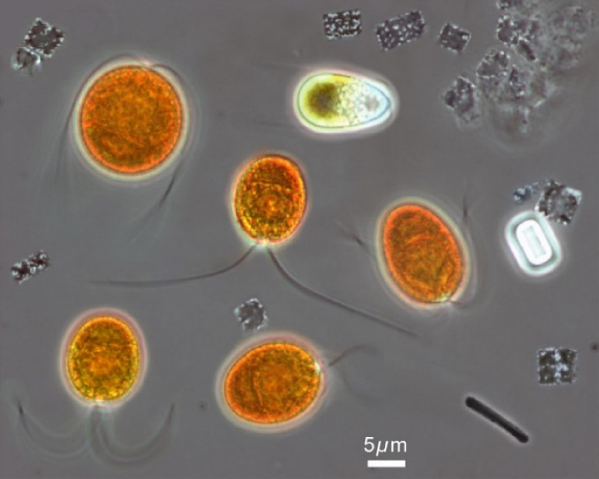
{kind=link}
Genes of Interest:
- SOS1 (Salt-Overly-Sensitive 1): Encodes a plasma membrane Na+/H+ antiporter essential for salt tolerance. Overexpression of this gene could enhance D. salina's salt absorption capacity. ¹
- DsZEP, DsCrtR-b, DsCruA/P, and DsCrtZ: These genes are involved in salt stress response and adaptation in D. salina. Upregulation of these genes could improve the algae's growth rate and salt tolerance in various conditions. ²
- Genes encoding carboxyl (-COOH), hydroxyl (-OH), amino (-NH2), phosphate (-P=O) and sulfate (-S=O) functional groups: These genes are associated with the biosorption of heavy metal ions, enhancing the algae's ability to remove heavy metals from water. ³
- Genes encoding SOD (superoxide dismutase) and CAT (catalase): These genes enhance the antioxidant response, helping the algae cope with heavy metal stress and other environmental stressors. ³
This genetically modified D. salina strain would offer a multi-purpose approach to water treatment. It would efficiently desalinate water while simultaneously removing heavy metals and potentially other contaminants. The process would be more energy-efficient and environmentally friendly compared to traditional desalination methods.
The GMO could be cultivated in photobioreactors or open ponds, where it would treat saline or contaminated water. As a bonus, the algal biomass produced could be harvested for valuable by-products such as β-carotene, further enhancing the economic viability of the process. ⁴
References:
¹ Mirzaei et al. (2024). Biodesalination of saline aquaculture wastewater with simultaneous nutrient removal and biomass production using the microalgae Arthrospira and Dunaliella in a circular economy approach.
² Gangali et al. (2019). Gene Expression Analysis in Dunaliella salina Under Salt Stress
³ Duo Chen et al. (2024). Genomics and transcriptomics reveal β-carotene synthesis mechanism in Dunaliella salina.
⁴ Towards a sustainable Dunaliella salina microalgal biorefinery for 9-cis β-carotene production (2020)
Together with Belen and David, I created a draft of a vegetable and herb farm module, consisting of a tower, a container and some cameras. It is our take on a small and versatile hydroponic farm, contextualized in Barcelona.
The tower is layered on the inside with root baskets where the vegetables are planted, then grow out from various holes around the perimeter of the tower. The tower may rotate to optimize the time the different plants spend in the sun. From the container, water is pumped into several basins that are located below each layer of root baskets. Inside the basins, the water is vaporized and rises to gently moisturize the roots.
The container consists of a compartment for compost at the top and one for water at the bottom.
Organic waste is slowly composted until it turns into highly concentrated compost tea which drips into the water tank below. The compost that is being produced on the side can be used in traditional agriculture or sold as a commodity. The water infused with nutrients from the compound is pumped up into the tower to water the plants.
The cameras are mounted around the perimeter of the container, using computer vision technology to analyze the current health and state of the plants. If the cameras for example spot a yellow and brown, dried up portion around the outer edge of a leaf, the system will notice that there might be a potassium deficiency in the provided nutrients and ask the user to provide banana peels as a potassium source. The cameras can also recognize how much light the different sides of the tower are getting and turn it in such a way that the plants receive sunlight in an evenly distributed way.
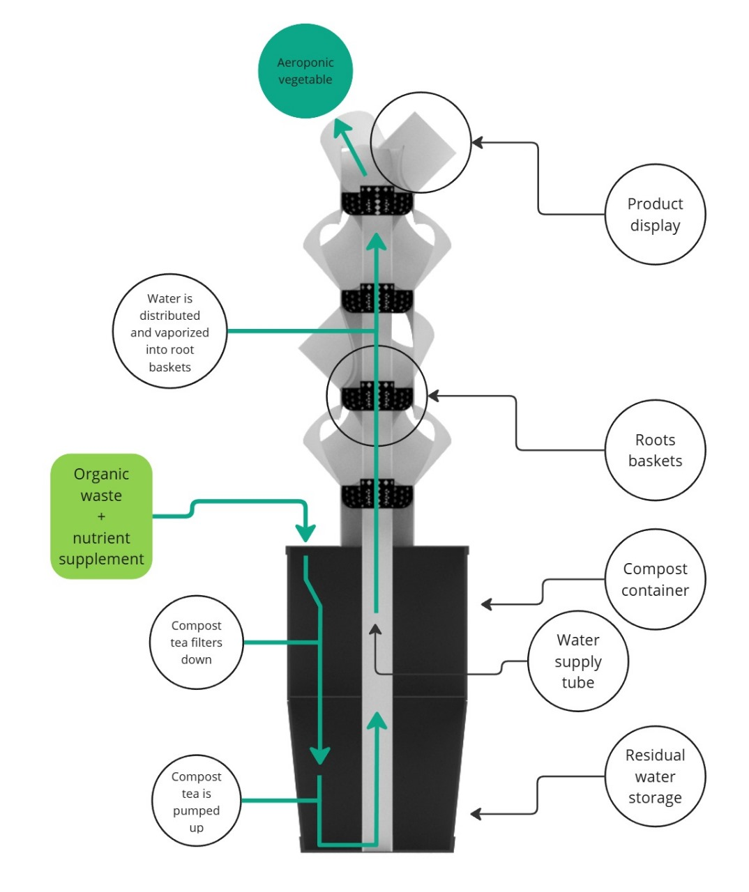
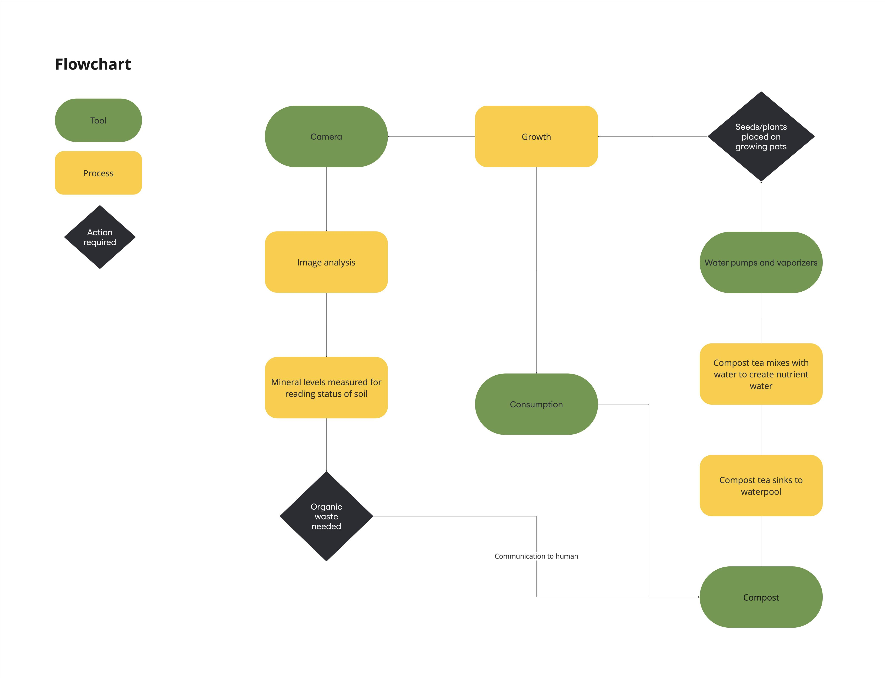
Reflection 1
The second term starts off with a lot more purpose than the first. After having formed a narrative that encompasses my previous projects and leads into a direction that I am looking forward to very much, I now have an easier time finding a starting point and a direction for my following interventions.
In my upcoming work, I want to explore different scales of communal living, from small community gardens to whole independent eco-villages in the context of three core aspects:
Human aspects of co-living, Technology to facilitate it and areas of self-sufficiency. The goal of these interventions is to experiment with as well as gather and share knowledge about the following areas of inquiry:
How to take away power from global conglomerates and put it into the hands of individuals situated in a community? How to rebuild relationship between the origin of resources and their consumption through closer engagement with the production of resources?
How to build a strong sense of purpose and belonging through encouraging close and deep human connections?
For the next steps I want to build a relationship with community gardens within Barcelona by contributing and documenting the work there, directly situating myself inside a living communal practice.
About me
Hi! I am Your names. I am an art director & graphic designer based in New York City working on branding, visual identities, editorial design and web design.
Previous work
I'm a paragraph. Edit the page on Gitlab to add your own text and edit me. I’m a great place for you to tell a story and let your users know a little more about you.
Project A
Talking about a specific project I am proud of.